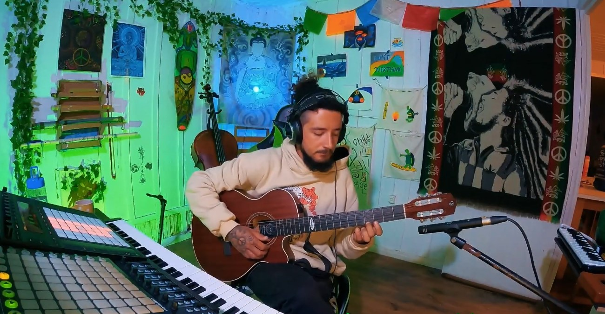

Music
Natan is a deeply connected person with his creative side — from music to intense performances. He travelled the world absorbing as much as he could to add to his creative arsenal.
Music — DJ and Producer since 2017, Natan has produced over 120 songs across styles from psytrance to ambient. He found his place with meditative live looping, creating improvised music as the energy of the room demands.

Flow Arts
Natan started his flow journey in 2021, diving headfirst into this amazing universe. Now retired from regular performance, he keeps flow arts as a personal practice until the time is right to shine on stages again.

Twitch Streamer
Streaming since 2021, Natan explored chatting, gaming, music production, DJing, flow arts, and IRL streams. He found his voice in live looping on Twitch, creating a cozy corner he calls "The Temple" — a place to slow down from the fast-moving internet.